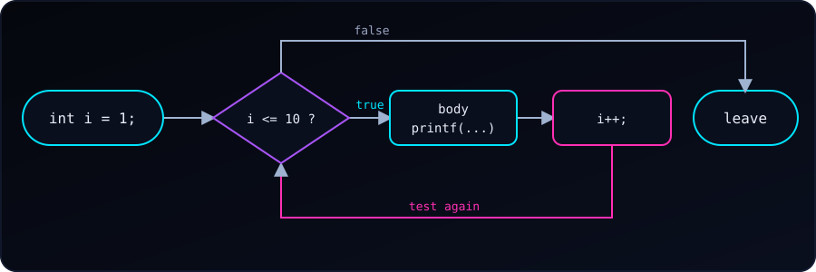

Five problems, from easy to medium, to build confidence with the while loop. Try each one on paper or in your editor first. If we get stuck, open See hint for the steps, and press Reveal code to compare with a tested solution.
Every solution was compiled with gcc -Wall -Wextra and run; the outputs shown are real. For a refresher, see the do-while loop.
The loop recipe. Almost every while solution has three parts: (1) a variable set before the loop, (2) a condition that is tested each time, and (3) a line inside the loop that moves the variable toward making the condition false. Forget the third and the loop never ends.
Problem 1 (Easy): Print Even Numbers
Write a program that uses a while loop to print all even numbers from 2 up to 10 (inclusive).
Expected output:
2 4 6 8 10- Start a counter at the first even number:
i = 2. - Repeat while
i <= 10. - Print
iinside the loop. - Add 2 to
i, not 1, to land on the next even number.
#include <stdio.h>
int main(void) {
int i = 2; // the first even number
while (i <= 10) {
printf("%d ", i);
i += 2; // jump to the next even number
}
printf("\n");
return 0;
}Try next: print the even numbers from 10 down to 2.
Problem 2 (Easy): Multiplication Table
Write a program that uses a while loop to print the multiplication table of 5, from 5 × 1 to 5 × 10.
Expected output (first and last lines):
5 x 1 = 5
...
5 x 10 = 50- Keep the table number in
num = 5. - Start a counter at
i = 1. - Repeat while
i <= 10. - Print
num,iandnum * iin oneprintf. - Add 1 to
i.
#include <stdio.h>
int main(void) {
int num = 5;
int i = 1;
while (i <= 10) {
printf("%d x %d = %d\n", num, i, num * i);
i++;
}
return 0;
}Try next: read num with scanf so the program prints any table.
Problem 3 (Medium): Factorial Calculator
Write a program that reads a number from the user and uses a while loop to compute its factorial. For example, 5! = 5 × 4 × 3 × 2 × 1 = 120.
Example run:
Enter a number: 5
5! = 120- Read
numwithscanf; reject negative input. - Start a result at
factorial = 1(uselong long, since factorials grow fast). - Copy the input into a counter:
i = num. - Repeat while
i > 1. - Multiply:
factorial *= i, theni--. - Print
factorialafter the loop.
#include <stdio.h>
int main(void) {
int num;
printf("Enter a number: ");
if (scanf("%d", &num) != 1 || num < 0) {
printf("Please enter a non-negative integer.\n");
return 1;
}
long long factorial = 1;
int i = num;
while (i > 1) { // multiplying by 1 changes nothing
factorial *= i;
i--;
}
printf("%d! = %lld\n", num, factorial);
return 0;
}Runs with different inputs:
Enter a number: 0
0! = 1
Enter a number: 20
20! = 2432902008176640000
Enter a number: 21
21! = -4249290049419214848Two things to notice. 0! = 1 works because the loop body never runs and the result stays 1. And 21! overflows even long long (the largest factorial that fits is 20!), so the printed value is garbage. A real program should check for this.
Try next: stop with a message if num is greater than 20.
Problem 4 (Medium): Reverse a Number
Write a program that reads an integer such as 1234 and uses a while loop to print it reversed (4321).
Example run:
Enter an integer: 1234
Reversed: 4321- Start with
reversed = 0. - Repeat while
num != 0. - Get the last digit:
digit = num % 10. - Append it:
reversed = reversed * 10 + digit. - Drop it from the input:
num /= 10. - Print
reversedafter the loop.
#include <stdio.h>
int main(void) {
int num;
printf("Enter an integer: ");
scanf("%d", &num);
int reversed = 0;
while (num != 0) {
int digit = num % 10; // last digit
reversed = reversed * 10 + digit; // append it to the result
num /= 10; // drop it from num
}
printf("Reversed: %d\n", reversed);
return 0;
}Let’s trace 1234:
num |
digit |
reversed |
|---|---|---|
| 1234 | 4 | 4 |
| 123 | 3 | 43 |
| 12 | 2 | 432 |
| 1 | 1 | 4321 |
| 0 | loop ends | 4321 |
Edge cases from real runs:
Enter an integer: 1200
Reversed: 21
Enter an integer: -45
Reversed: -54Trailing zeros disappear (1200 becomes 21), because a number cannot have leading zeros. Negative numbers work, since % and / keep the sign in C. To keep the zeros, treat the input as a string instead.
Try next: use the same loop to check whether a number is a palindrome.
Problem 5 (Medium): Count Digits
Write a program that uses a while loop to count the digits of an integer entered by the user (4502 has 4 digits).
Example run:
Enter an integer: 4502
4502 has 4 digit(s)- Copy the input into
tempsonumstays intact for printing. - Start
count = 0. - Special case: if
temp == 0, setcount = 1. - Repeat while
temp != 0: dividetempby 10 and add 1 tocount. - Print
count.
#include <stdio.h>
int main(void) {
int num;
printf("Enter an integer: ");
scanf("%d", &num);
int count = 0;
int temp = num;
if (temp == 0) {
count = 1; // 0 has one digit, but the loop below would skip it
}
while (temp != 0) {
temp /= 10;
count++;
}
printf("%d has %d digit(s)\n", num, count);
return 0;
}The special case matters: for 0 the condition temp != 0 is false at once, so without the if we would print 0 digits. Negative numbers work too (-987 has 3 digits), because dividing by 10 moves a negative number toward 0 as well.
Try next: compute the sum of the digits instead of the count.
What These Problems Practise
| Problem | Pattern |
|---|---|
| 1. Even numbers | Counting with a step other than 1 |
| 2. Multiplication table | A counter used inside a calculation |
| 3. Factorial | An accumulator that multiplies |
| 4. Reverse a number | Peeling digits with % and / |
| 5. Count digits | A counter that runs until the value reaches 0 |